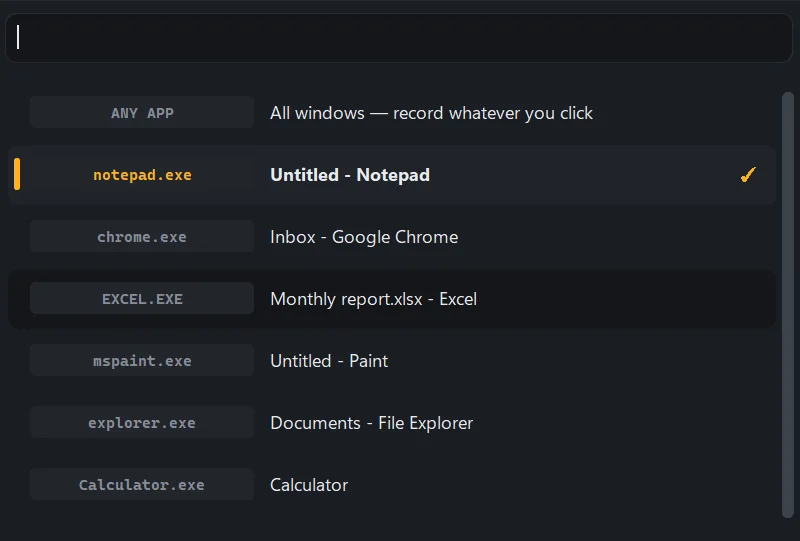
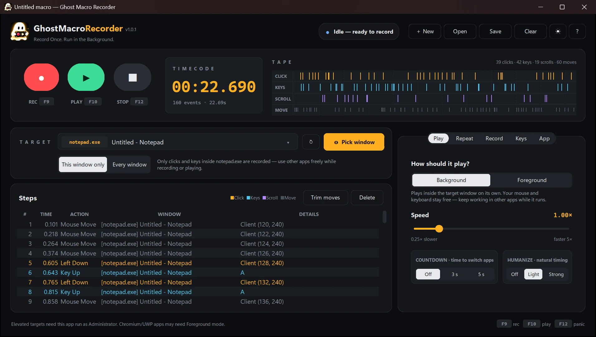
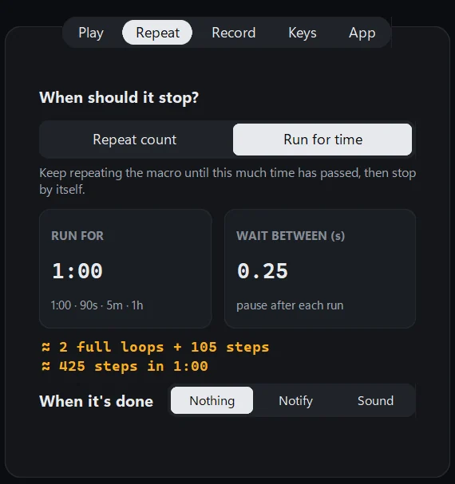
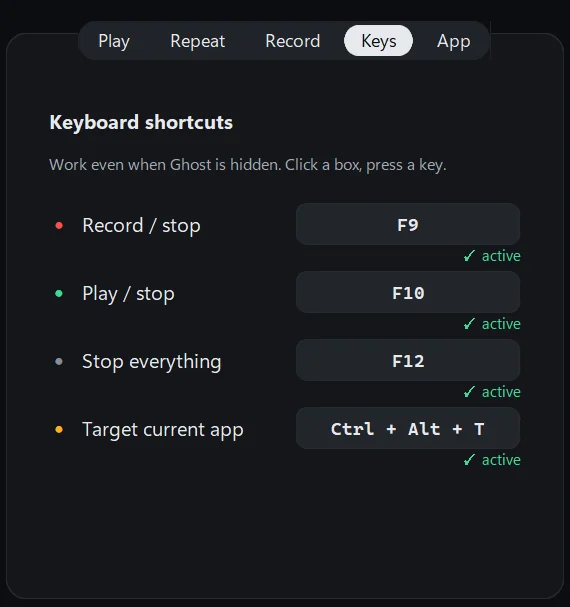
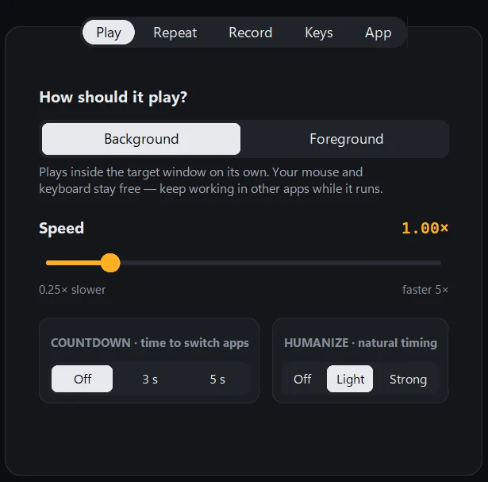
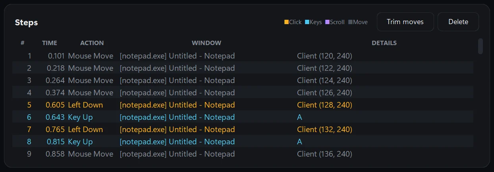
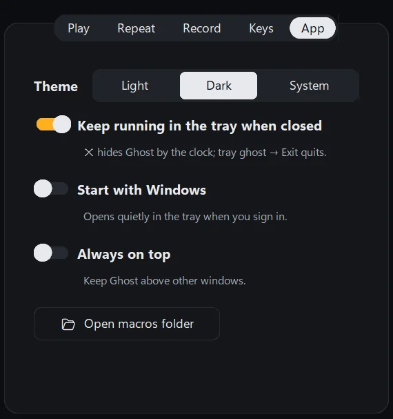

Targets one app
Search your open windows or press a hotkey inside the app. Clicks in other apps are left out.

Version 1.0.1, free for Windows 10 and 11
Record your clicks and keystrokes in one app. Ghost replays them inside that window while your own mouse and keyboard stay free for other work.

Press record and work in your app. Every click, key and scroll lands on the tape and in the step list, where you trim what you don't need before you press play. See the main features
Search your open windows or press a hotkey inside the app. Clicks in other apps are left out.

Run a macro 3 times, forever, or for exactly 1:00. Ghost shows how many loops will fit.

F9 records, F10 plays and F12 stops, even with Ghost hidden in the tray. Any key can be changed.

Set 0.25× to 5×, a 3 or 5 second countdown, and small random pauses so runs vary.

Each step remembers its window. Ghost sends it there as a Windows message, so the cursor never moves and your typing never lands in the wrong app.
Apps that ignore background input, such as some games and Chromium windows, get Foreground mode, which moves the real mouse.
Read the questions
New versions show up here as soon as they are published. Install over the old one; your settings and macros stay.
One-click download link, and the installer keeps one fixed file name.
First release: background playback, run for a set time, hotkeys, tray mode.

Yes. It is open source under the MIT licence, with no account, ads or paid tier.
Smart App Control stops new apps that are not code-signed yet. Signing is being set up; until then, run Ghost from its source on GitHub.
Only when Ghost also runs as administrator. Windows blocks input from normal apps to apps that run with admin rights.
No. Ghost has no network code. Settings and macros stay in your AppData folder.
As .json files in the macros folder, one click away under Settings, App.